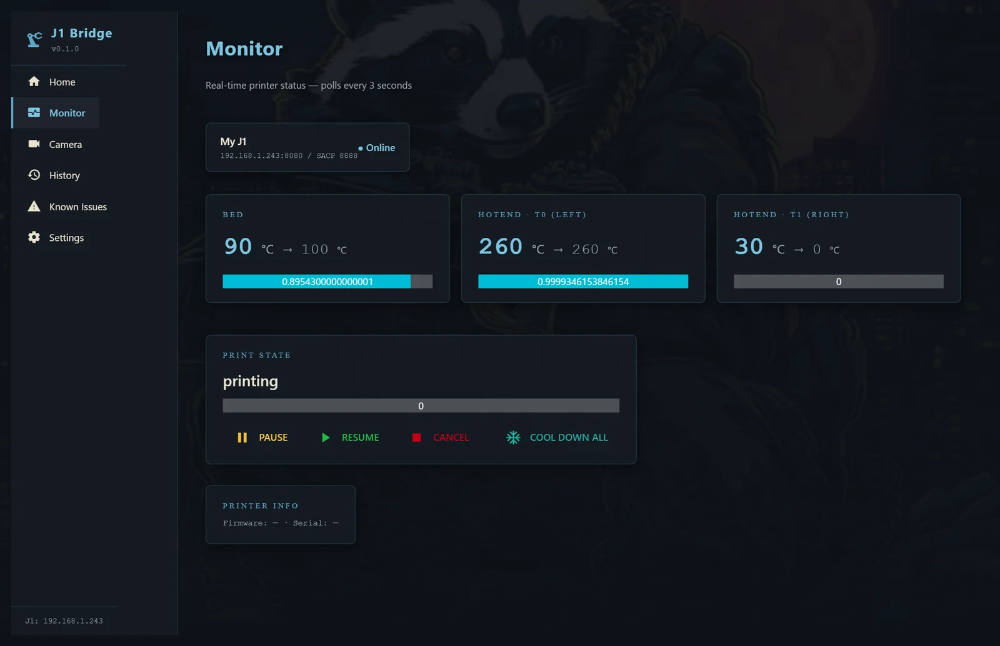
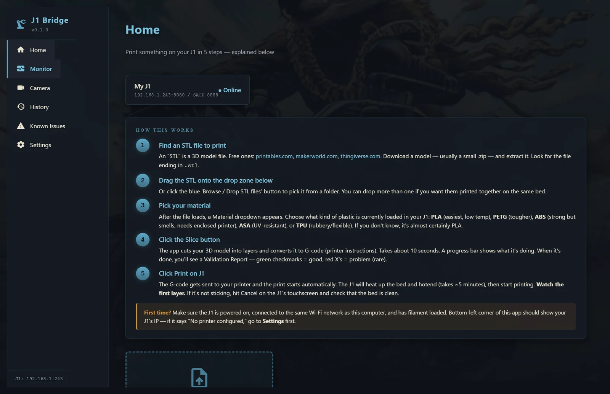
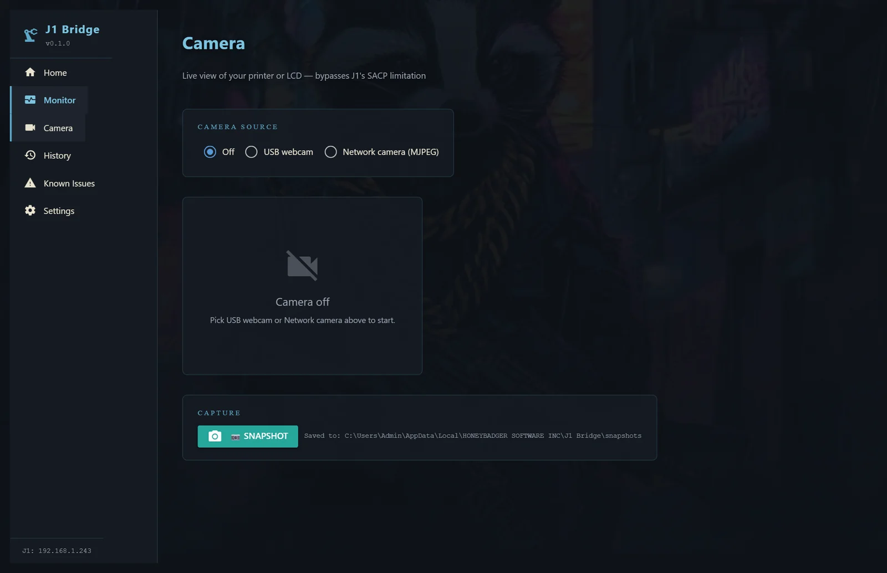
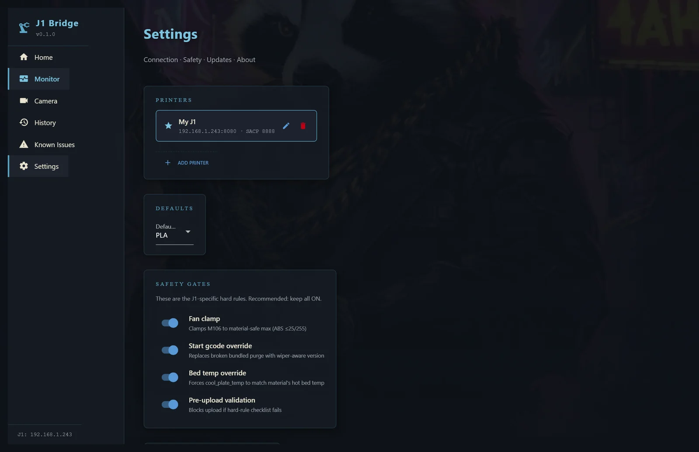

OrcaSlicer + Snapmaker J1, finally talking to each other. Drag an STL, walk away, watch it print from your desk. On stock V2.8.0 firmware — no Klipper conversion, no Pi, no soldering.

Drop an STL anywhere on the Home tab. J1 Bridge slices it with the correct J1 profile, patches the printer's broken start macro, uploads, and starts the print. One drag — no Reddit hacks, no manual gcode shuffling.


Plug a USB webcam in and pick it from the dropdown — or point at a network MJPEG stream. No OctoPi flash, no SD card configuration, no separate Raspberry Pi to babysit. Snapshot button writes straight to disk.
Safety gates — fan clamp, start-macro patch, bed-temp override — default ON. And every copy ships with a built-in Known Issues tab on day one. No surprises, no marketing claim the code can't back up.

| Printers | Snapmaker J1 & J1s |
|---|---|
| Firmware | Stock V2.8.0 — no Klipper conversion required |
| Operating system | Windows 10 / 11 (64-bit) |
| Connection | Printer on your LAN (Wi-Fi or Ethernet) |
| Slicer | Bundled OrcaSlicer engine — nothing else to install |
| Camera | Any USB webcam, or a network MJPEG stream |
| Install | Single Windows installer — no Python, no Docker, no terminal |
| Price | Free for personal use · support the studio if you want to feed the badger |
Grab the installer, or follow the build and get pinged at launch.